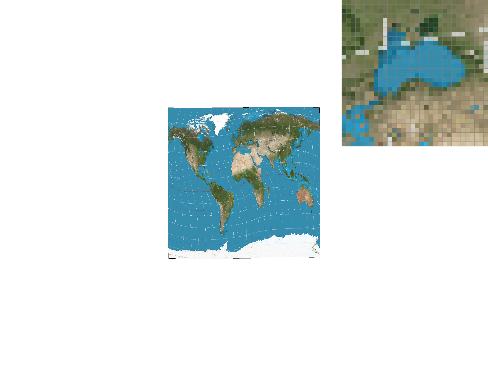

CS184/284A Spring 2026 Homework 1 Write-Up
Link to webpage: https://cal-cs184-student.github.io/hw-webpages-ayangsea/
Link to GitHub repository: https://github.com/cal-cs184-student/hw1-rasterizer-ayangsea
Overview
In this project, we implemented a triangle rasterization and texture mapping pipeline with multiple techniques to improve rendering quality. We started by only rasterizing single color triangles, without any additional techniques to reduce jaggies. Next, we added supersampling antialiasing, allowing us to sample at higher rates resulting in smoother edges by averaging multiple subpixels per pixel. Next, we used barycentric coordinates to interpolate point within shapes to produce smooth color gradients, like that seen in svg7. For texture mapping, we implemented nearest neighbor and bilinear pixel sampling, observing that bilinear interpolation significantly reduces blockiness and aliasing. Finally, we added mipmap-based level sampling to handle texture minification, selecting appropriate resolution levels using UV derivatives to balance visual quality, memory usage, and performance.
Overall, we learned a lot from this project. Initially, I still struggled with the idea of rasterization and by the end of the project we added multiple techniques onto the basic rasterization pipeline allowing us to drastically improve our image quality. One of our favorite parts of the homework was really getting to understand bilinear interpolation, and creating really cool color gradients with barycentric coordinates. I enjoyed learning about the relationship between linear interpolation, bilinear interpolation, and how barycentric coordinates is merely an extension of those concepts.
Task 1: Drawing Single-Color Triangles
1. First, we draw the bounding box around the triangle. To get the edges of the bounding box, we take the min (floor) and max (ceil) of the x and y coordinates of the three vertices of the triangle. Next, we loop through each point that lies inside the bounding box, and for each point, we calculate the center of that pixel by adding 0.5 to the x and y coordinates. To determine whether or not the center of the pixel, we first define an edge function, which takes in the coordinates of 3 points, lets call them A, B and P, and calculates the signed area of the triangle formed by the 3 points. If the area is positive, it means that the triangle is going clockwise, and vice versea. Thus, the edge function returns positive if P is to the right of the line AB, and negative if P is to the left of the line AB. If we calculate the edge function for all 3 edges of the triangle with our pixel center, the pixel center will be within the triangle only if all 3 values returned by the edge function are all positive or all negative.
2. Our algorithm is no worse than one that checks each sample within the bounding box of the triangle because we calculate the bounding box at the beginning of the fuction, and only loop through the points within the bounding box.

Task 2: Antialiasing by Supersampling
1. To implement supersampling, I modified a few things. First, I increased the size of the sample buffer to be width * height * sample_rate instead to be able to hold all the supersampled points. I also update the fill_point function to directly fill rgb_framebuffer_target, bypassing sample_buffer since it is used by the rasterize_point and rasterize_line functions which do not need to support supersampling. In sample_buffer, each section of sample_rate entries corresponds to one pixel. Thus, in the resolve_to_framebuffer function, we average all sections of length sample_rate and add that value into the frame buffer.
2. Screenshots

|

|

|

|
Task 3: Transforms

Task 4: Barycentric coordinates


Task 5: "Pixel sampling" for texture mapping
Pixel sampling is the process of figuring out what color a pixel on the screen should be based on a texture image. When you're rendering a 3D surface with a texture, each pixel on screen maps to some point on the texture, but that point usually doesn't land exactly on a texture pixel (texel). So you have to "sample" the texture to get a color, and how you do that sampling makes a big difference in quality. To implement this, I took each pixel's UV coordinates (which tell you where on the texture it corresponds to) and used them to look up colors in the mipmap at the appropriate level. The two methods I used for this lookup are nearest neighbor and bilinear interpolation. Nearest neighbor sampling is the simpler of the two. You just take the UV coordinate, multiply by the texture dimensions, round to the nearest integer, and return whatever texel lives there. It's fast and easy to implement, but the results can look blocky or pixelated, especially when the texture is being stretched or viewed at an angle, because you're just snapping to the closest texel with no smoothing. Bilinear sampling is a step up. Instead of snapping to one texel, you look at the four texels surrounding your UV coordinate and blend them together based on how close the sample point is to each one. This involves two rounds of linear interpolation. First horizontally across the bottom two texels and the top two texels, then vertically between those results. The outcome is a much smoother appearance since colors transition gradually between texels rather than jumping abruptly.|
 |
|
|
|
|
We used test2 in the texmap directory and zoomed into a lake region, as it had many contrasting colors within that one region.
Looking at the comparisons, nearest sampling at 1 sample per pixel tends to look the worst, with jagged edges and obvious aliasing. Bilinear at 1 sample per pixel already looks noticeably smoother. Bumping up to 16 samples per pixel helps both methods, but bilinear at 16 samples per pixel generally produces the cleanest result. The difference between the two methods is the most when there is a lot going on in the image with high-frequency detail and sharply contrasting colors. In these cases, nearest sampling snaps to a single texel and can create harsh, uneven transitions between colors, while bilinear sampling blends the surrounding texels together and smooths those transitions out. The more densely packed the detail and the more stark the color contrast, the more noticeable the gap in quality between the two methods becomes.
Task 6: "Level Sampling" with mipmaps for texture mapping
Level sampling selects which mipmap level to sample from based on how much the UV coordinates change across screen pixels. I computed the UV derivatives by interpolating barycentric coordinates at (x,y), (x+1,y), and (x,y+1), taking the differences, scaling by texture dimensions, and computing log₂ of the max derivative magnitude. L_ZERO always samples level 0 (full resolution). L_NEAREST rounds the computed level to the nearest integer. L_LINEAR linearly interpolates between the two adjacent mipmap levels weighted by the fractional part of the computed level.Supersampling is the most general antialiasing method but is costly — speed and memory both scale linearly with sample rate as the sample buffer grows proportionally. Pixel sampling (bilinear vs. nearest) is cheap in memory and has modest speed cost (4 lookups vs. 1), but only smooths local texel boundaries and doesn't help with heavily minified textures. Level sampling requires ~33% extra memory for the mipmap pyramid but is very effective at reducing minification aliasing with low runtime overhead. L_LINEAR doubles texture lookups but eliminates harsh level transitions.